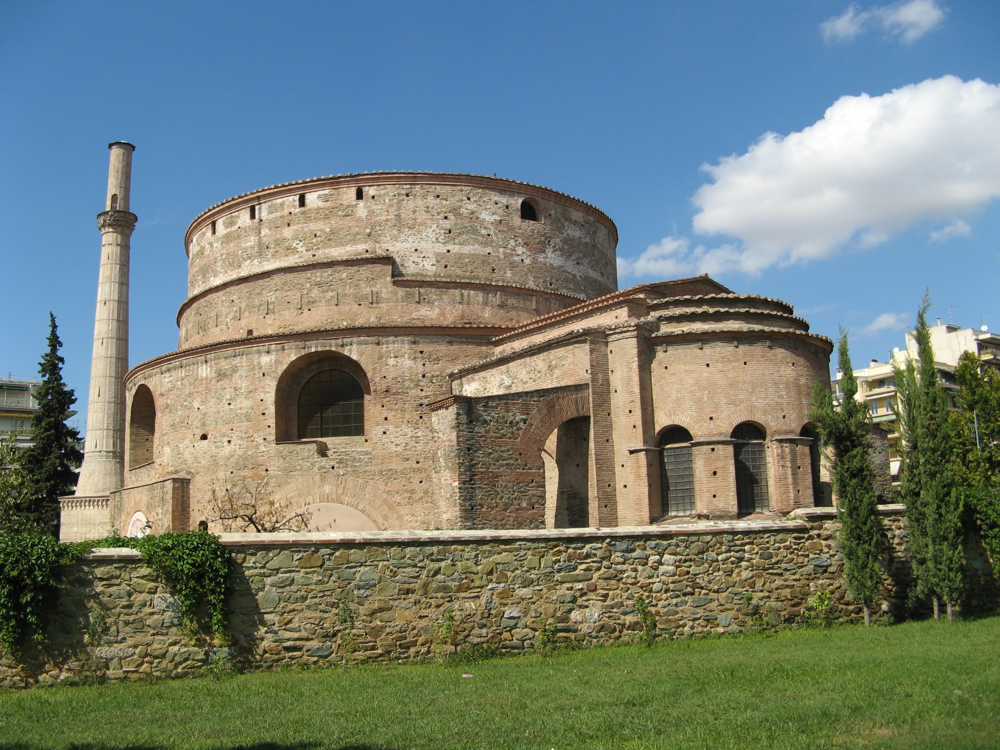
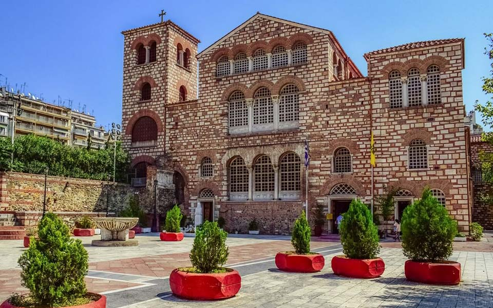
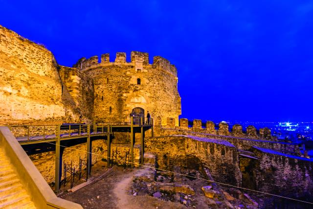

H Ροτόντα είναι θολωτό κυκλικό κτίσμα του 4ου αιώνα στη Θεσσαλονίκη, παρόμοιο με το Πάνθεον της Ρώμης. Η αρχική χρήση του δεν είναι γνωστή αλλά διατυπώθηκαν ως τώρα διάφορες υποθέσεις: ότι υπήρξε ναός του Διός, ή των Καβείρων, ότι κατασκευάστηκε από τον Καίσαρα Γαλέριο ως μαυσωλείο του, ή ως αίθουσα του θρόνου στο ανακτορικό συγκρότημα. Λόγω της μη χρήσης του, μετατράπηκε επί βυζαντίου σε χριστιανικό ναό των Ασωμάτων Δυνάμεων και μετά την Απελευθέρωση της Θεσσαλονίκης, το 1912, αφιερώθηκε στον Άγιο Γεώργιο

Στο κέντρο της Θεσσαλονίκης, μόλις 5 λεπτά με τα πόδια από της πλατεία Αριστοτέλους, στην οδό Αγίου Δημητρίου, βρίσκεται ο Ιερός Ναός Αγίου Δημητρίου και αποτελεί τον σημαντικότερο παλαιο-χριστιανικό ναό της πόλης για πολλούς λόγους. Ο Ναός για πολλούς ταυτίζεται με την ιστορία της πόλης και τα γεγονότα που τη σημάδεψαν. Αποτελεί εξαίρετο δείγμα αρχιτεκτονικής ενώ έχει υποστεί αρκετές ανακατασκευές, προσθήκες αλλά και καταστροφές που συνέβησαν στο πέρασμα των αιώνων. Κατά τον 4ο αιώνα μ. Χ. κατασκευάστηκε αρχικά ένας μικρός Χριστιανικός ναός πάνω από τα ερείπια των αρχαιοτέρων Ρωμαϊκών λουτρών που βρίσκονταν στον ίδιο χώρο. Έναν αιώνα αργότερα η αρχική αυτή κατασκευή αντικαταστάθηκε από ένα Τρίκλινο Ναό, αλλά η τελική διαμόρφωση έγινε το 629 – 634 μ. Χ. σαν πεντάκλιτη Βασιλική με εγκάρσιο κλίτος. Έχουν εφαρμοστεί διάφορες τεχνοτροπίες καθιστώντας το Ναό μοναδικό σε όρους θρησκευτικής τέχνης. Έχει ένα ιδιαίτερο, εξαγωνικό σχήμα, κάτι που είναι αρκετά σπάνιο. Τα υπέροχα μωσαϊκά του 5ου αιώνα και ο πλούσιος ζωγραφικός και μαρμάρινος διάκοσμος του χαρίζουν ιδιαίτερη αξία. Στη μεγάλη πυρκαγιά του 1917 το κτίριο καταστράφηκε ολοσχερώς, όπως και πολλά άλλα κτίρια που βρίσκονταν στο ιστορικό κέντρο της πόλης, και οι εργασίες για την αναστήλωση του ήταν συνεχεία και διήρκεσαν αρκετά χρόνια. Ο Άγιος Δημήτριος αποτελεί πόλο έλξης αρκετών πιστών καθημερινά από όλη την Ελλάδα, την Ανατολική Ευρώπη, Βαλκανικές χώρες αλλά και άλλες ορθόδοξες χώρες γενικότερα. Ο Ναός παραμένει ανοιχτός καθημερινά 06:00 – 22:00.

Τα Βυζαντινά τείχη της Θεσσαλονίκης έχουν σήμερα μήκος περίπου 4 χιλιομέτρων, αλλά η αρχική περίμετρος που κάλυπταν ήταν 8 χιλιόμετρα και το ύψος τους ήταν 10-12 μέτρα. Το τείχος για πολλούς αιώνες περιέβαλλε την πόλη, περιλαμβάνοντας στη νοτιοδυτική πλευρά προς το Θερμαϊκό κόλπο παραθαλάσσια τείχη, τα οποία όμως σήμερα δεν υπάρχουν. Στη βορειοανατολική πλευρά ανεβαίνει προς τα υψώματα, περιλαμβάνοντας ακρόπολη, μέσα στην οποία βρίσκεται και το αμυντικό σύμπλεγμα του Επταπυργίου. Στο δυτικό και ανατολικό τείχος υπάρχουν τριγωνικοί πρόβολοι, ενώ στα πιο ψηλά σημεία και ιδίως στο τμήμα που χωρίζει την ακρόπολη από την πόλη υπάρχουν ορθογώνιοι πύργοι. Το χτίσιμο τους περιλαμβάνει επαναλαμβανόμενες σειρές τούβλων και πετρωμάτων διακοσμημένες με χριστιανικά (σταυρούς) και αρχαιοελληνικά σύμβολα (απεικονίσεις του ήλιου, ρόμβους). Παρόμοιας τεχνοτροπίας είναι και τα βυζαντινά τείχη που σώζονται στην Κωνσταντινούπολη. Σήμερα αποτελούν ιδιαίτερο και αξιόλογο μνημείο της Θεσσαλονίκης καθώς και ένα εκ των τοποσήμων αυτής, ενώ έχουν χαρακτηριστεί επίσημα ως Μνημείο Παγκόσμιας Πολιτισμικής Κληρονομιάς από την ΟΥΝΕΣΚΟ.